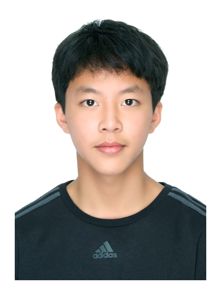

01_BIOGRAPHY

// PORTRAIT_FRAME_INIT
// AFFILIATION

Taipei Wego Senior High School

Benjamin Sung (宋其軒)
// Grade 11 Student @ Wego High School IEP
I am a passionate engineer-in-training with a focus on how systems interact with the physical world. Whether it's designing autonomous robots for competitions or using AI to analyze ecological data, I thrive on solving complex technical challenges.
"True engineers don't just solve problems; they innovate for the future."
02_DEVELOPMENT_TIMELINE
Robotics lead & Marine AI Fellow
Leading Wego Robotics in VEX competitions. Awarded Create & Sportsmanship awards. Currently conducting government-sponsored AI research in Hawaii.
SPROUT Program & Bio Olympiads
Mastered advanced data structures via NTU SPROUT. Achieved BBO Gold and USABO Semifinalist status. Qualified for AIME (9/15).
Debate & Service Foundations
Joined the Debate Club and started volunteer work with ACT Club and CoInfinitas, building early leadership and communication skills.